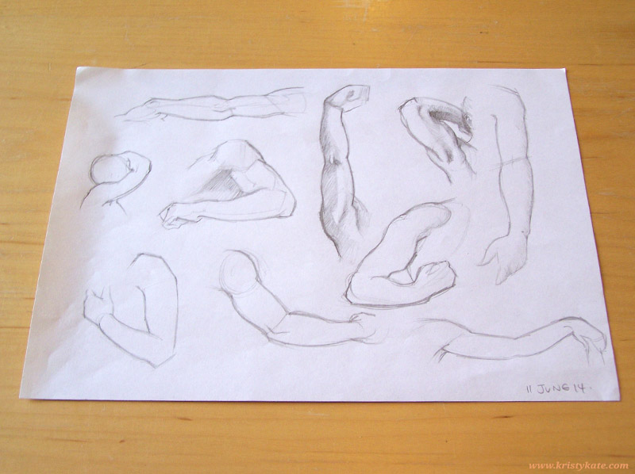
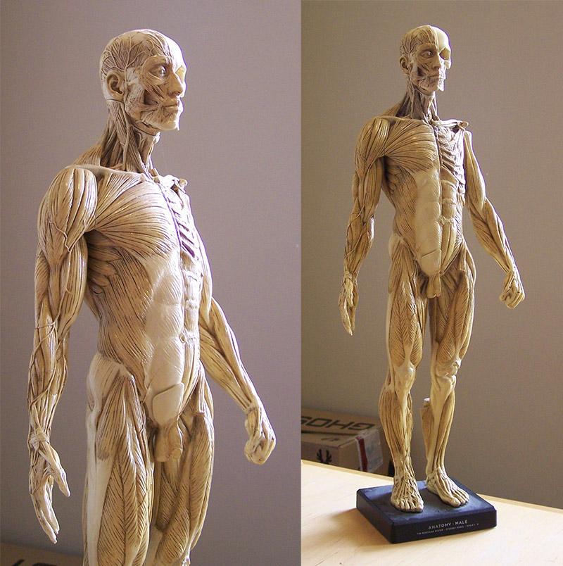
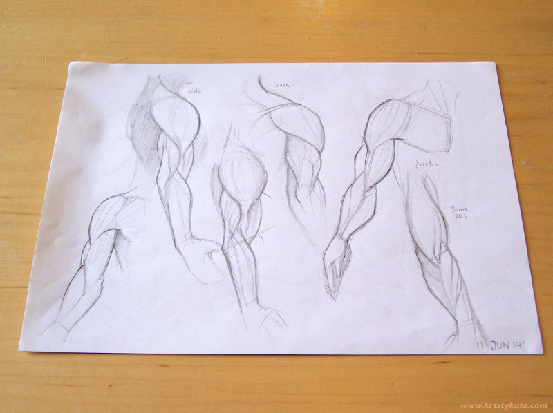
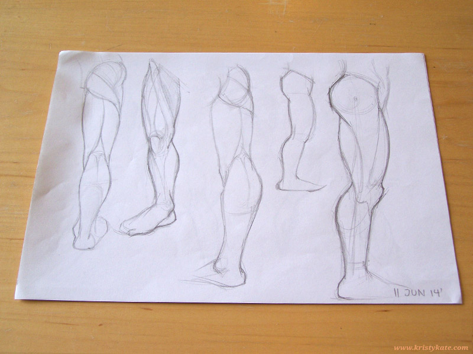
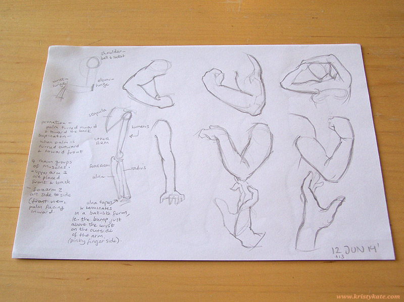
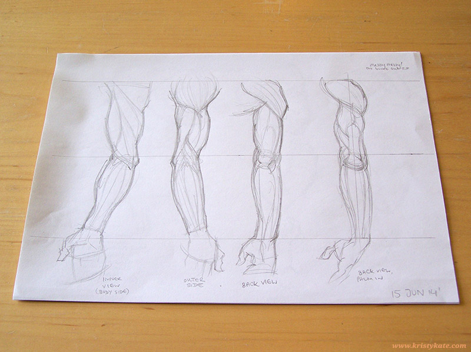

Week 12 Studies
June 9th - 15th
In Week 12 I studied arms, drawing from the books - Loomis' Figure Drawing For All It's Worth, Vanderpoel's The Human Figure, and Rubins' The Human Figure.

It also occurred to me that hey, I should be making studies from my Anatomy Tools male figure! He spends too much time just standing around looking pretty, see:

So I sketched his arms:

And ended up sketching his legs too:

Then it was back to arm studies again.


To be honest, I'm not sure how well I went in memorising the features of the arm. I learnt that the muscle of the shoulder is called the deltoid, the upper arm bone is the humerus, and the two lower arm bones are the ulna and radius. Oh, and that little bump above the wrist, on the outer side of the arm (pinky finger side)? That's where the ulna terminates. All this time I thought it was a separate bone.
Can't say much on proportions though!
I had attempted to really nail proportion last night, but I was so burnt out from work, studies and watching tutorials during the week, all I could manage were some rough scribbles (see above).
TIP: Don't try to study detailed illustrations of muscles when you have eye-strain. Take a break instead, it will help in the long run!
So what's next?
Well, there will be a slight change of plans. Instead of studying the legs this week, I will be taking part in Pencil Kings' Figure Drawing Challenge 2014. It's a 4 week mini course, set to push your figure drawing skills to the next level. Sounds right up my alley!
And of course, this weekend I will be testing my knowledge with the 3rd Anatomy Turnaround Sheet.
Bring on progress!
Until next time,
x Kristy Kate
+ + +
Have any thoughts on my studies? Join me on my creative journey by leaving a comment (constructive criticism welcome) or connecting via Twitter or Facebook.